Hub Computer Setup
- Sensing Device Software
- Miscellaneous Software
This documentation details the required software necessary to transfer data from sensing devices to the IDEAFAST data portal.
Sensing Device Software
The following software is necessary to transfer raw data from sensing devices in the IDEAFAST project.
OMGUI (Axivity AX6)
OMGUI is the windows software for activating the AX6, transferring data, and viewing battery status. To download and install OMGUI, follow the link to open Movement wiki: https://github.com/digitalinteraction/openmovement/wiki/AX3-GUI. The link provides you with details instructions on download, installation and quick start of the OMGUI software.
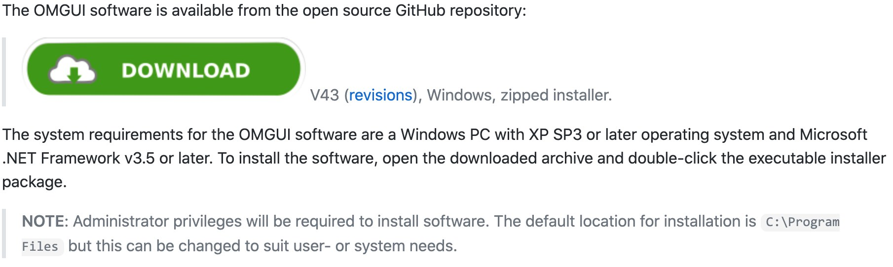
Figure 1: download button and instructions
A zip folder will be downloaded to your computer. You need to unzip it and click on the .exe file that it contains, and the installation will be done automatically. To open OMGUI, find and click the desktop icon or startmenu link to start OMGUI.
If you cannot find the link, open an “Explorer” window and type “C:\Program Files (x86)\Open Movement\OM GUI” into the search bar at the top of the window. Double-click on “OmGui.exe” to start OMGUI.
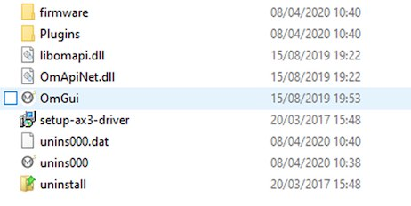
Figure 2: click “OmGui” to run the software.
DynaPort (MoveMonitor)
To create an account and install DynaPort Software, you need to have a computer operating in Windows. There are four steps to create an account and install DynaPort Software:
|
Step 1: Create Account Go to https://www.mcroberts.nl/mymcroberts/login.html by clicking ‘Sign Up Here’. When a ‘study code’ is requested enter ‘IDEA-FAST’. |
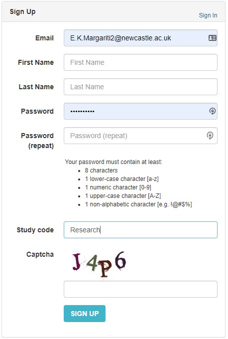 |
| 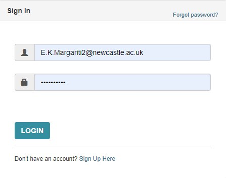 |
Step 2: Log in Once you signed up you will receive an email. Click on the activation link in the email to activate your account. You can now log in on My McRoberts. |
|
Step 3: Download DynaPort Manager After your first login a pop-up will appear with the request to download a small software package. Download this software to create a connection between the MoveMonitor and the software on My McRoberts. |
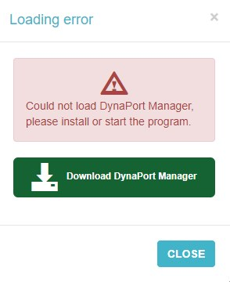 |
The steps above install a software on your computer that helps retrieve data from your MoveMonitor device and set up new measurements through McRobert’s web platform. To configure and use DynaPort, please follow the steps below:
|
Step 1: Connect your MoveMonitor Connect the MoveMonitor sensor with the provided USB cable to the computer. If you do not have DynaPort Manager installed in this computer, see how to download it at the sections above. |
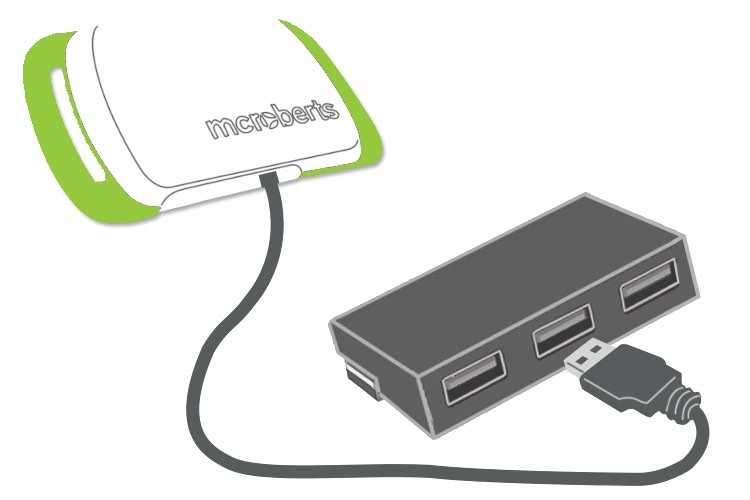 |
 |
Step 2: Log in to McRoberts Log in to your McRoberts through the DynaPort manager website: https://www.mcroberts.nl/mymcroberts If you do not have an account, see how to create an account at the section above. |
|
Step 3: Select Device If you have your MoveMonitor connected, you will be able to view it in DynaPort devices tab. Each device tile displays the device number (lower left corner), the battery status (upper left corner), and that it is connected via USB (upper right corner). |
 |
Miscellaneous Software
The following software are required to support data transfer protocols on the IDEAFAST project, including transfer of data from smartphone to computer, local backup of the data, and managing the data prior to upload on the IDEAFAST data portal, i.e. 7-Zip.
VeraCrypt (Local Storage)
VeraCrypt is a free open source disk encryption software available for all operating systems and will be used for the encrypting locally stored data in the IDEAFAST project. If your site does not backup data locally, then this software installation can be skipped.
Installing VeraCrypt
Open your browser and enter https://www.veracrypt.fr/en/Downloads.html in the search bar. Choose the Windows installer as highlighted below: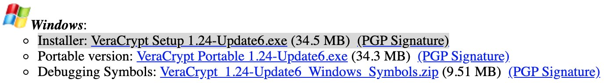
Figure 1: Tap “VeraCrypt Setup …” to download the “.exe” for installation on Windows.
Once downloaded, click on the .exe file and the pop-up installer window will guide you through the installation process:
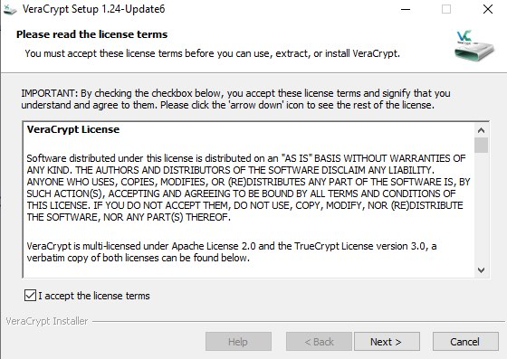
Figure 2: Agree to the terms, tap “Next >” to go through the process.
You can start VeraCrypt by clicking on the desktop icon (automatically generated through the process) or by typing VeraCrypt in start menu bar. A quick start tutorial on how to use VeraCrypt further can be found here: https://www.veracrypt.fr/en/Beginner%27s%20Tutorial.html
Additional details on using VeraCrypt for local backup are detailed in the local backup procedure documentation.
TeamViewer (Remote Support)
TeamViewer is a comprehensive, remote access, remote control and remote support solution. It should be installed on your work computer where you will access data from sensing devices in IDEA-FAST to enable remote support if necessary.
To download TeamViewer, go to https://www.teamviewer.com/en/products/teamviewer/ and click on the download button (Figure 1). The .exe file will be downloaded onto your computer. Click on the .exe file and the installation will start automatically.
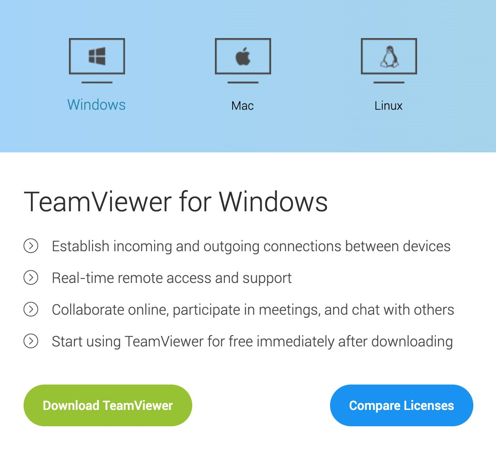
Figure 1: click “Download TeamViewer” and the “.exe” installation file will be downloaded.
Using TeamViewer
Once installed, TeamViewer generates a unique id for your machine, which you can share to your collaborator to allow remote access to your desktop. After the installation, open TeamViewer by clicking on the desktop icon or by searching the program in the start menu bar. You will be able to see a window with your unique ID and password. You need to share this ID and password to the person that needs access to your computer via any channel while keeping TeamViewer open.
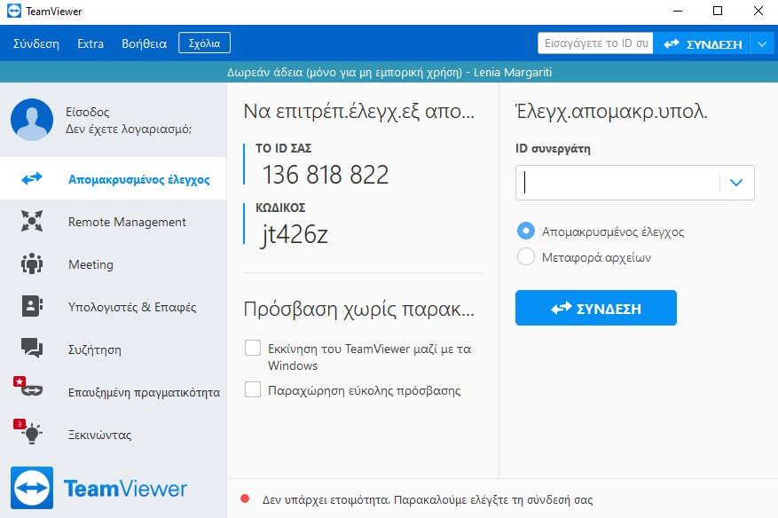
Figure 2: the 9-digit code and password should be shared with collaborators for them to remotely access your computer.
KeePassX (Password Manager)
KeePass is a password manager that stores authentication credentials in an encrypted database, which can be unlocked with one master key. A keepass database has been created for each study site that stores the following credentials:
- Gmail for the Samsung A40 smartphones
-
Dreem’s mobile application
- Dreem’s web portal
- Biovotion’s mobile application
Credentials for other service (byteflies, CANTAB Connection, and McRoberts) must be obtained by individual staff members by contacting the company directly. Refer to the associated documentation of the device for more information.
Installing KeePass
Download the installation bundle from: https://www.keepassx.org/downloads
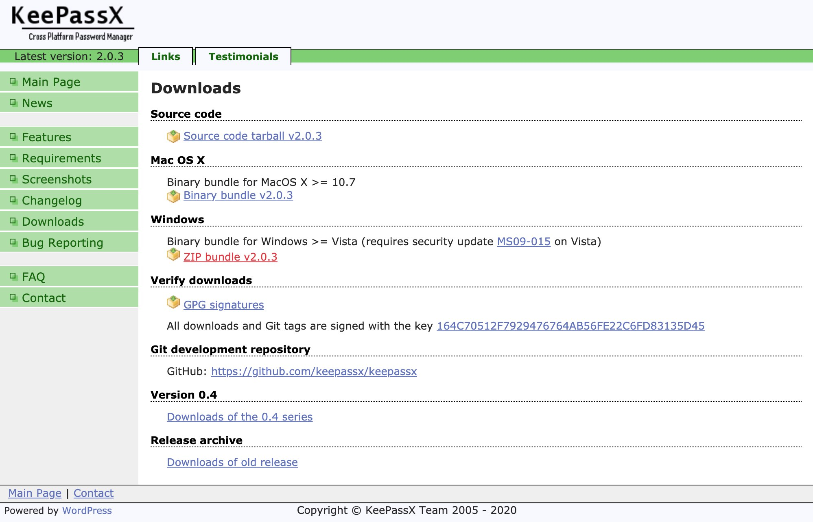
Figure 1: Click ”Zip Bundle v…” to download a zip folder for installation in Windows. This version may change depending on when you install the software.
Unzip the folder and click the “KeePassX.exe” to install KeyPass. It will then automatically open and on first launch it will prompt you to enable (default) or disable automatic checks for updates.
Using KeePass
KeePass stores user credentials in a “. kdbx” database that requires (i) a secure key; and (ii) master password to open it. To access the key and password for the main IDEA-FAST keypass database you must contact Jay Rainey (Newcastle University) to arrange access with you directly. This includes a link to the IDEA-FAST database and a zoom call to provide the master password. The following guide is an example of how to use the secure key and master password to open and view credentials within a keypass database.
Select KeyPass Database
Open the KeyPass software and you will enter the welcome page. Click the “folder” icon at the top left corner (Figure 2) and choose the IDEAFAST KeyPass file that you have downloaded through communication with Jay above. You can also the “Database” option from the toolbar, then click “Open Database”.
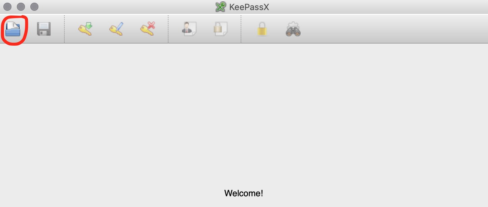
Figure 2: Click the folder icon to open a KeyPass database.
Open KeyPass Database
After opening the database, you will be required to enter the master password and the key file (Figure 3). These will be provided by Jay separately. Once they are entered click “OK”.
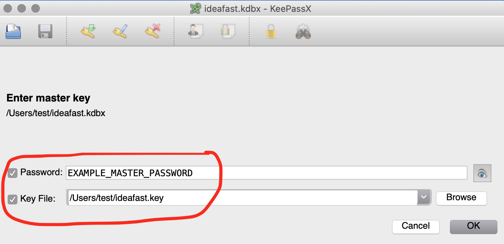
Figure 3: Enter the Password and Key File to access the IDEA-FAST database.
View Credentials
Now you have successfully entered the database you can view all the passwords for different sensing devices and are grouped by device as illustrated below:
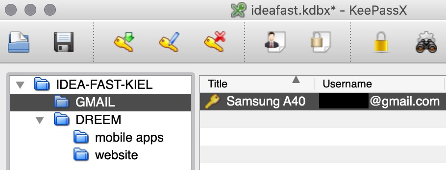
Figure 4: click the device of interest and the user credentials appear on the right-hand side.
Android File Transfer (Data Transfer)
Android File Transfer (AFT) is a software program for connecting and transferring data between Android phones and a desktop computer. AFT will be used to manually transfer data from the VitalPatch application as outlined in the associated instructions.
Installing Android File Transfer
- Download the application from https://www.android.com/filetransfer/
- Click the “.exe” file and AFT will install on your Windows computer and create a shortcut on your desktop. AFT’s icon is illustrated in figure 1.
Figure 1: Android File Transfer icon that will appear in your start menu and desktop.
Using Android File Transfer
- Use the USB cable that came with your Android device and connect it to your computer.
- Open Android File Transfer by clicking the Desktop icon or searching for it from the start menu.
- Note: ensure that the “USB Preferences” on the phone is set to “File Transfer”
- Once open, you can then browse files and folders on your Android device and copy files by dragging them onto your desktop:
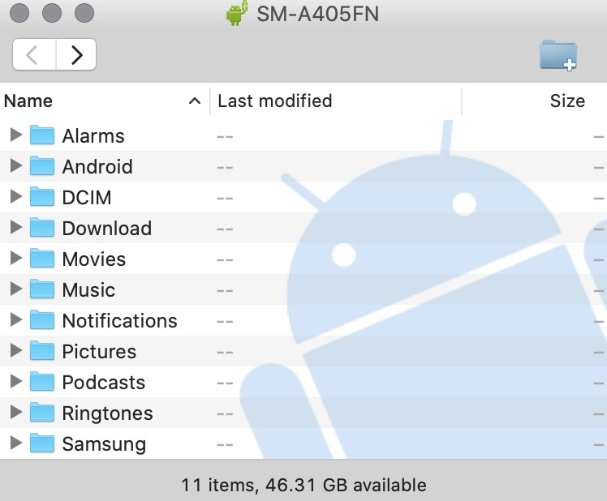
Figure 2: use Android File Transfer to manually retrieve data from an Android smartphone.
7-Zip (Data Portal Upload)
7-Zip is a powerful archiver software that is recommended for creating zip files of data prior to uploading them to IDEAFAST’s data portal website (https://data.ideafast.eu/).
Installing 7-Zip
Visit https://www.7-zip.org/ and click “Download” from the table next to “64-bit x64” as below:
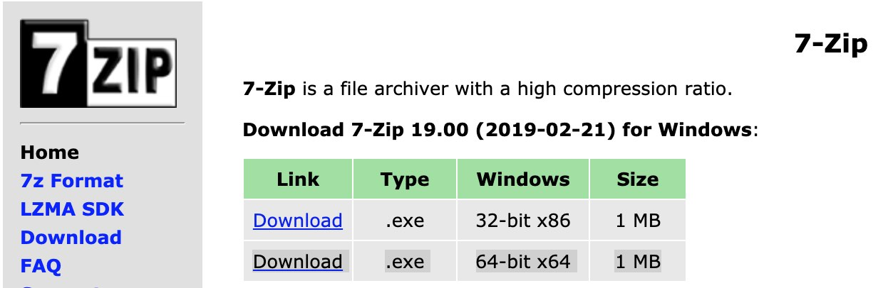
Figure 1: Choose the 64-bit version of 7-Zip.
Click on the .exe file that has been downloaded. If you asked for “User Account Control” permissions click “Yes”. Click “install” to install the software in the default destination:
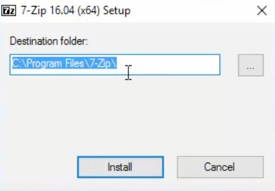
Figure 2: The default installation location of 7-Zip.
7-Zip is now installed and ready to be used.
Using 7-Zip
By default, 7-Zip will be accessible from within the context menu (Figure 3). This means that you can select multiple files and “Add to archive” to create a .7z archive.
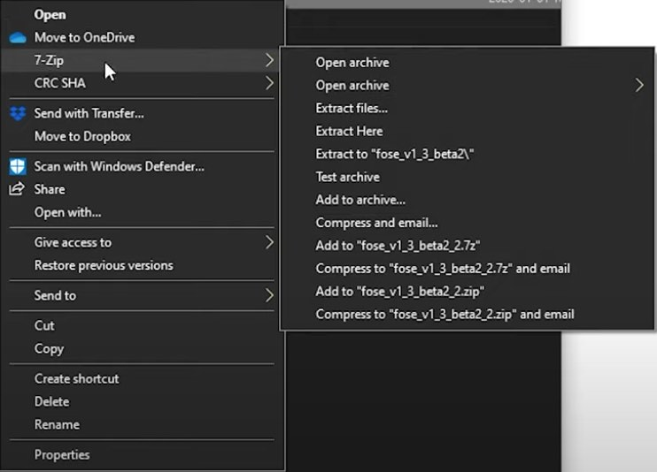
Figure 3: you can open, extract and create archives by through the ‘context menu’ after right clicking a file (or multiple) as illustrated above.